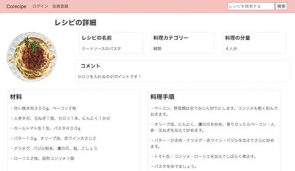

Corecipe(料理レシピ共有サイト)
開発環境
Ruby / Ruby on Rails / PostgreSQL / GitHub / Render / Visual Studio Code / AWS
-
概要
制作時間 80時間 URL https://corecipe.onrender.com ID admin PASS 0905 -
動作テスト
テスト用アカウント
nickname test_user mail test_user@hoge.com PASS testuser1234
OUTLINEアプリケーションの概要
オリジナルアプリケーションとして、料理のレシピを投稿するアプリケーションを開発しました。
主な機能は、ユーザー登録機能、レシピ投稿機能、そしてコメント機能です。
トップページにアクセスすると、投稿されたレシピの一覧が表示されています。個々のレシピをクリックすると、そのレシピの詳細を閲覧することができます。
ヘッダーに検索フォームがあり、閲覧したいレシピをキーワード検索で表示することができます。
ユーザー登録をすると、それらのタイムラインに自身の投稿をすることができます。そこには画像を添付したり、他の人が後からコメントを残したりすることもできます。
-
開発に至った経緯
さまざまなメディアで知った料理のレシピをその都度メモ書きしていたのですが、それがたくさん集まってしまい、管理に困っていました。
また、知人とレシピを紹介し合うことがあり、口頭ではなく、記録で残して共有できたら便利だなと思い、このオリジナルアプリを開発することにしました。
-
開発で工夫したこと
１つ目はフロントサイドです。食をテーマにしたアプリケーションなので、食欲をそそる配色と、たくさんの項目が見やすく配置されることを心がけました。
２つ目はコーディングです。意味を分かりやすく、簡潔に記述することを心がけ、後から編集しやすくしました。
いずれも、知人に実際に利用してもらい、ユーザーヒアリングを行いながら改善を行っています。
-
今後実装したいと思っていること
LINE notifyとGoogle Apps Scriptを使って
レシピの新規投稿があると、LINEにメッセージが届く機能を実装中です。